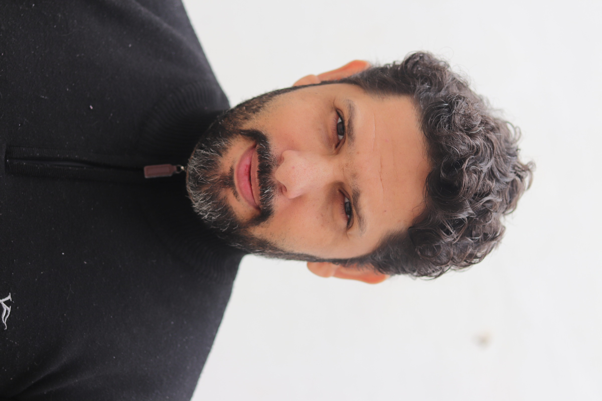

|  |
Ricardo LimaPhotographer specialized in Female Photography. I'm Ricardo Lima! I have been passionate about photography since I was little, even though I have another academic background. During most of that time, I dedicated myself to capturing the enchantments of different types of landscapes, especially during sunset. |
| Year | Work |
|---|---|
| 2020 | 30 photoshoots |
| 2021 | 90 photoshoots |
| 2022 | 60 photoshoots |
| Natural Light ⭐ ⭐ ⭐ ⭐⭐ | Sunset photography ⭐ ⭐ ⭐ ⭐⭐ |
| Cooking ⭐ ⭐ ⭐ | Play Harmonica ⭐ |